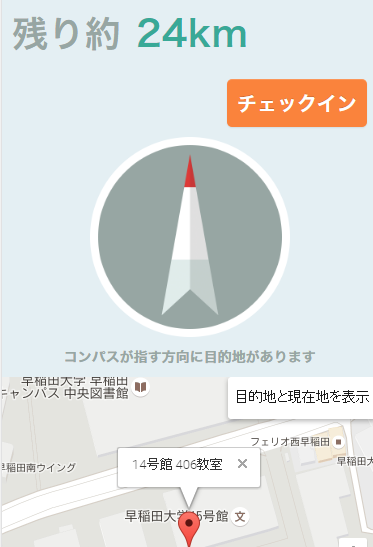

ユーザ登録 （ニックネーム登録）
まずニックネームを登録してください．ニックネームは，自由に決められます．実名である必要はありません．
ニックネームはアプリケーション内で，他のユーザに表示されることがあります．

未訪問チェックポイント (チェックポイントの選択)
チェックポイントは，早稲田祭で開催中のおすすめ企画やイベント，ランドマーク，秘密スポットなどです．
訪問したいチェックポイントを選択したら，地図上で所在地を確認し，画面に表示された「ここに行く」ボタンをクリックしましょう．

↓
ナビ （チェックポイントへの誘導）
コンパスとチェックポイントまでの距離が表示され，チェックポイントへと導いてもらえます． コンパスの赤い先端が指す向きにチェックポイントがあります．
チェックポイントに近づき，「チェックイン」ボタンを押すと，チェックインすることができます．

チェックイン (「合い言葉」の入力)
チェックポイントにたどり着いたら，チェックインしましょう．チェックポイントにある「合い言葉」を入力することでチェックインができます．
チェックインするとポイントを獲得できます．

クイズタスク (クイズに回答)
チェックインするとクイズが出題されます．正解するとポイントを獲得できます．
クイズに答えたら，次の新たなチェックポイントを，目指しましょう．

訪問済みチェックポイント (履歴の確認)
これまでに訪問したチェックポイントが，チェックインした順に一覧で表示されます．獲得ポイントは，「獲得したポイント数/獲得できる最大ポイント数」で表示されます．
ランキング (順位とポイントの確認)
参加した人を獲得ポイントの多い順に表示しています． また，自分の順位と獲得ポイントを知ることができます．

ヘルプ (使い方の確認)
ユーザ登録後，画面上部右端の「メニュー」ボタンをクリックするとメニューが表示されます．「使い方」を選ぶとこのページが見られます．